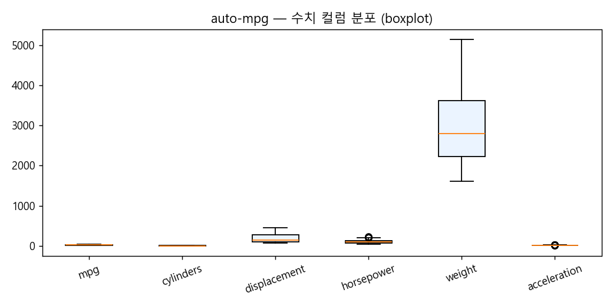
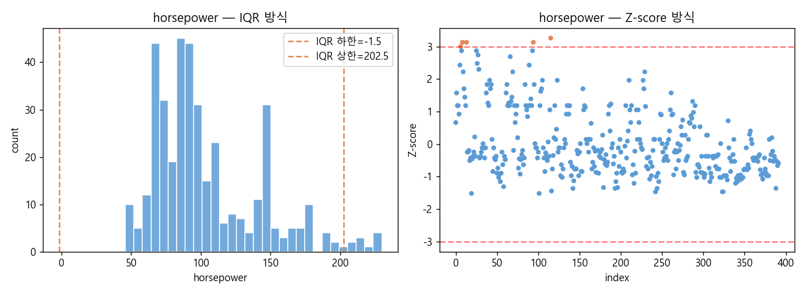
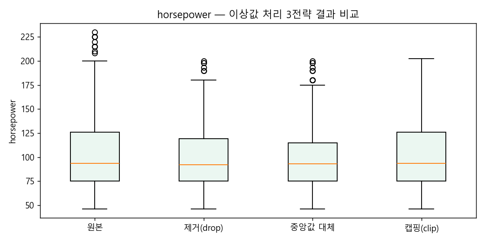
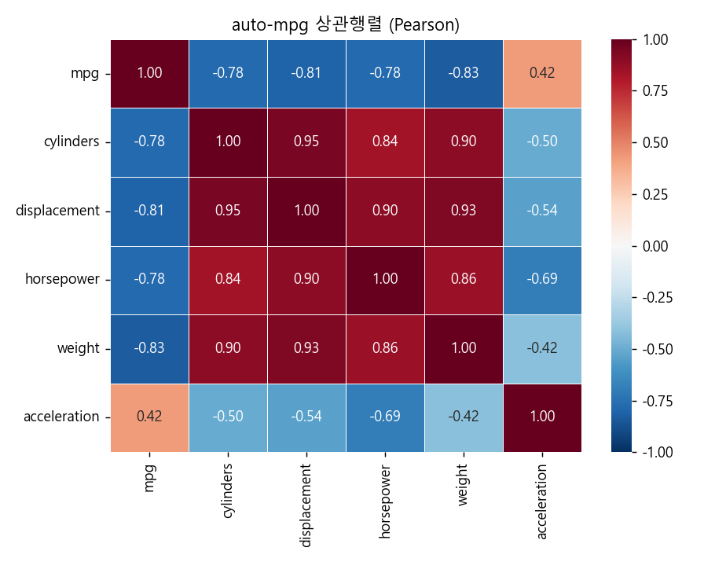
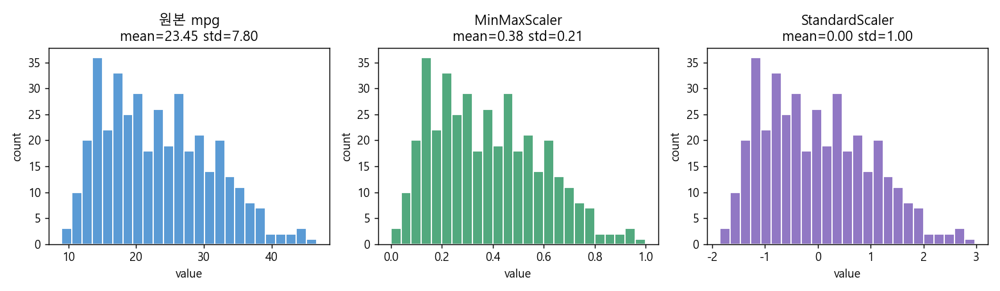

CH 01DataFrame 구조 탐색 · 인덱스·컬럼 조작#
학습
DataFrame의 핵심 속성: .values(NumPy 배열), .dtypes(컬럼별 dtype),
.shape, .index, .columns.
혼합 dtype 컬럼이 있으면 .values는 object 배열이 된다.
# path : test_pandas/pandas_test3.py (발췌)
# 2026-05-22
import pandas as pd
import numpy as np
data = {
"2019": [9904312, 3448737, 2890451, 2466052],
"2020": [9631482, 3393191, 2632035, 2431774],
"2021": [9762546, 3512547, 2517680, 2456016],
"지역": ["수도권", "경상권", "수도권", "경상권"],
}
idx = ["서울", "부산", "인천", "대구"]
df = pd.DataFrame(data, index=idx)
print(df.dtypes) # 2019 int64, 2020 int64, 지역 object
print(df.shape) # (4, 4)
print(df.values) # dtype=object (혼합 컬럼)
print(type(df.index)) # pandas.Index
"The DataFrame object can be thought of as a dict of Series objects, all sharing
the same index. Accessing .values on a mixed-dtype DataFrame
returns an object array."
— Pandas 공식 문서 · DataFrame
의문 → 가설
→ 맞다. Pandas DataFrame은 내부적으로 NumPy ndarray 블록으로 구성된다. 단, 컬럼 dtype이 혼합(int + object)이면 .values는 object 배열이 된다. dtype이 균일한 경우에만 int64·float64 배열이 추출된다.
테스트
df.dtypes: 2019 int64 2020 int64 2021 int64 지역 object df.shape : (4, 4) df.values.dtype : object ← 혼합 컬럼 → object 배열 숫자 컬럼만 추출: df[['2019','2020']].values.dtype : int64
결론(중간)
.values로 NumPy 배열을 꺼낼 수 있지만, 혼합 dtype 컬럼이 있으면 object 배열이 반환된다.
수치 연산이 필요하면 먼저 수치 컬럼만 선택해야 한다.
CH 02MultiIndex · stack · unstack#
학습
MultiIndex는 행 또는 열에 다중 계층 인덱스를 부여한다.
stack(level)은 지정 열 레벨을 행으로 내려 long format을 만들고,
unstack(level)은 행 레벨을 열로 올려 wide format을 만든다.
# path : test_pandas/pandas_test4.py (발췌)
# 2026-05-21 ~ 2026-05-22
import pandas as pd, numpy as np
row_idx = pd.MultiIndex.from_product(
[['M', 'F'], ['id_1', 'id_2', 'id_3']],
names=['Gender', 'Gidx2']
)
col_idx = pd.MultiIndex.from_product(
[['A', 'B'], ['C1', 'C2', 'C3', 'C4']],
names=['Cidx1', 'Cidx2']
)
df = pd.DataFrame(
np.random.randint(0, 100, (6, 8)),
index=row_idx, columns=col_idx
)
print(df.shape) # (6, 8)
stacked = df.stack('Cidx1')
print(stacked.shape) # (12, 4)"Hierarchical indexing makes it possible to work with higher-dimensional data in a lower-dimensional form. Stack and unstack rotate data between rows and columns." — Pandas 공식 문서 · MultiIndex / Advanced indexing
의문 → 가설
→ 이론상 가능하지만 NaN 발생·열 순서 변경 시 완전 복원이 보장되지 않는다. stack/unstack은 같은 데이터를 다른 시각으로 보는 도구이지, 완전한 역변환이 아니다.
테스트
원본 shape : (6, 8)
stack('Cidx1') : (12, 4) 행 6→12, 열 8→4
unstack('Gidx2'): (2, 12) 행 6→2, 열 8→12
stack 후 인덱스 레벨 : 3개 ['Gender','Gidx2','Cidx1']
unstack 후 컬럼 레벨 : 2개
결론(중간)
CH 03auto-mpg 로드 · 기술 통계 탐색#
학습
describe()는 count, mean, std, min, Q1/Q2/Q3, max를 한 번에 반환한다.
count가 shape[0]보다 작으면 NaN이 있다는 신호다.
auto-mpg의 horsepower 컬럼에는 '?' 문자가 섞여 있어
na_values=['?']를 지정하지 않으면 object 타입으로 읽힌다.
# path : test_pandas/pandas_test5.py (발췌)
# 2026-05-22
import pandas as pd
df = pd.read_csv(
'test_pandas/data/auto-mpg.data',
sep=r'\s+', header=None,
names=['mpg','cylinders','displacement','horsepower',
'weight','acceleration','model_year','origin','car_name'],
na_values=['?'] # '?' → NaN 자동 변환
)
print(df.shape) # (398, 9)
print(df['horsepower'].describe())
print(df.isna().sum())"Descriptive statistics summarize the central tendency, dispersion, and shape of a dataset's distribution, excluding NaN values." — Pandas 공식 문서 · DataFrame.describe
의문 → 가설
→ 맞다. describe()는 NaN을 count에서 제외한다. horsepower count=392 vs shape=398 → 6개 결측값. na_values=['?'] 없이 로드하면 horsepower가 object 타입이 돼 describe()에 아예 포함되지 않는다.
테스트
shape: (398, 9) horsepower describe: count 392.000 ← 398 - 392 = 6개 결측값 mean 104.469 std 38.491 min 46.000 25% 75.000 50% 93.500 75% 126.000 max 230.000 isna().sum(): horsepower 6 (나머지 컬럼 모두 0) Q1=75 Q3=126 IQR=51 max=230 은 Q3(126)에서 크게 벗어남 → 이상값 후보

결론(중간)
na_values=['?'] 옵션이 전처리 전체를 좌우한다.
describe()의 count와 shape[0] 차이 = 결측값 개수.
max=230이 Q3(126) + 1.5×IQR(51) = 202.5를 초과하므로 이상값 탐지가 필요하다.
CH 04이상값 탐지 : IQR vs Z-score#
학습
두 가지 이상값 탐지 방법:
- IQR : IQR = Q3 - Q1. 하한 = Q1 - 1.5×IQR, 상한 = Q3 + 1.5×IQR. 분포 무관.
- Z-score : Z = (x - mean) / std. |Z| > 3이면 이상값. 정규분포 가정.
# path : test_pandas/pandas_test5.py (발췌)
# 2026-05-22
hp = df['horsepower'].dropna()
Q1 = hp.quantile(0.25) # 75.0
Q3 = hp.quantile(0.75) # 126.0
IQR = Q3 - Q1 # 51.0
lower = Q1 - 1.5 * IQR # -1.5
upper = Q3 + 1.5 * IQR # 202.5
iqr_out = hp[(hp < lower) | (hp > upper)]
z_scores = (hp - hp.mean()) / hp.std()
z_out = hp[z_scores.abs() > 3]"The IQR method is robust to the influence of extreme observations because it relies on quantiles rather than mean and standard deviation." — scipy.stats 공식 문서 · scipy.stats 개요
의문 → 가설
→ auto-mpg horsepower처럼 오른쪽 꼬리 분포에서는 IQR이 더 많은 이상값을 탐지할 것이다. Z-score는 정규분포를 가정하므로 오른쪽 꼬리 데이터에서 과소 탐지할 수 있다.
테스트
Q1=75.0 Q3=126.0 IQR=51.0 하한=-1.5 상한=202.5 IQR 이상값 (10개): [208 210 215 215 220 225 230 225 210 215] Z-score |Z|>3 이상값 (5개): [220 225 230 225 220] 공통 탐지 : 5개 (IQR and Z-score 모두) IQR만 탐지: 5개 (208~215 범위) Z-score만 : 0개 → 오른쪽 꼬리에서 IQR이 더 보수적으로 탐지

결론(중간)
CH 05이상값 처리 3전략 비교#
학습
| 전략 | 방법 | 장점 | 단점 |
|---|---|---|---|
| 제거 | boolean indexing drop | 단순·명확 | 데이터 손실, n 감소 |
| 대체 | 이상값 → median | n 유지, 중앙값 보존 | 분포 약간 왜곡 |
| 캡핑 | clip(lower, upper) | n 유지, 극단값 완화 | 정보 변형 |
# path : test_pandas/pandas_test5.py (발췌)
# 2026-05-22
hp = df['horsepower'].dropna()
median_val = hp.median()
# 제거
hp_drop = hp[(hp >= lower) & (hp <= upper)]
# 대체
hp_replace = hp.copy()
hp_replace[(hp_replace < lower) | (hp_replace > upper)] = median_val
# 캡핑
hp_clip = hp.clip(lower=lower, upper=upper)"Winsorization (clipping) replaces extreme values at specified percentiles, preserving sample size while limiting the influence of outliers." — scipy.stats.mstats · winsorize
의문 → 가설
→ 캡핑은 행 수(n)를 유지하고 이상값을 상한값으로 교체하므로 평균이 원본과 가장 가깝다. 제거는 고마력 차량 데이터가 사라져 평균이 내려간다.
테스트
전략 count mean std min max 원본(결측제거) 392 104.47 38.49 46.0 230.0 제거(drop) 382 101.48 35.14 46.0 200.0 ← n 감소 중앙값대체 392 101.27 35.26 46.0 200.0 캡핑(IQR 상한) 392 104.05 36.33 46.0 202.5 ← 평균 최보존 → 캡핑이 원본 평균(104.47)과 가장 가까운 104.05

결론(중간)
CH 06상관행렬 분석 · 다중공선성 탐지#
학습
df.corr()는 모든 수치형 변수 쌍의 피어슨 상관계수를 계산한다.
|r| > 0.8이면 강한 상관, > 0.7이면 다중공선성 위험 신호다.
선형 회귀 등에서 강한 상관 변수 쌍은 VIF 검사 또는 PCA로 처리해야 한다.
# path : test_pandas/pandas_test5.py (발췌)
# 2026-05-22
numeric_df = df.select_dtypes(include='number')
corr = numeric_df.corr()
# |r| > 0.7 변수 쌍 필터링
import numpy as np
mask = np.triu(np.ones(corr.shape), k=1).astype(bool)
high_corr = corr.where(mask).stack()
high_corr = high_corr[high_corr.abs() > 0.7]
print(high_corr.sort_values(ascending=False))"Pearson's correlation measures linear association. High correlation between predictors (multicollinearity) inflates standard errors and makes coefficient estimates unreliable." — Pandas 공식 문서 · DataFrame.corr
의문 → 가설
→ 선형 회귀에서 weight와 displacement 같은 강한 상관 변수를 동시에 넣으면 두 변수 중 하나의 계수가 불안정해진다. 이것이 다중공선성 문제다.
테스트
|r| > 0.7 변수 쌍: cylinders displacement 0.951 ← 매우 강한 양의 상관 displacement weight 0.933 cylinders weight 0.898 cylinders mpg -0.778 ← 강한 음의 상관 displacement mpg -0.805 weight mpg -0.832 → mpg는 weight, displacement, cylinders 모두와 강한 음의 상관 → 세 변수 중 하나만 선택하는 것이 다중공선성 방지에 유리

결론(중간)
CH 07MinMax · StandardScaler 정규화#
학습
- MinMaxScaler : (x - min) / (max - min) → [0, 1]. 이상값이 max·min을 결정하므로 취약.
- StandardScaler : (x - mean) / std → 평균 0, 표준편차 1. 이상값에 상대적으로 강건.
# path : test_pandas/pandas_test5.py (발췌)
# 2026-05-22
from sklearn.preprocessing import MinMaxScaler, StandardScaler
scaler_mm = MinMaxScaler()
scaler_std = StandardScaler()
df['mpg_minmax'] = scaler_mm.fit_transform(df[['mpg']])
df['mpg_standard'] = scaler_std.fit_transform(df[['mpg']])"MinMaxScaler is sensitive to outliers, as the range depends on the minimum and maximum values. StandardScaler assumes data is approximately normally distributed." — scikit-learn 공식 문서 · Preprocessing data
의문 → 가설
→ MinMax의 분모 = max - min. 이상값이 max를 올리면 정상 범위 데이터가 전체 범위의 앞쪽 좁은 구간으로 압축된다. 예: 정상 범위 9~42, 이상값 max=46.6 → 정상값 대부분이 [0, 0.7] 이내로 몰림.
테스트
mpg 원본: mean=23.45 std=7.81 min=9.0 max=46.6 MinMaxScaler: mean=0.3842 std=0.2082 min=0.0 max=1.0 StandardScaler: mean=0.0000 std=1.0000 min=-1.85 max=2.97 이상값 있을 때 MinMax 비교: 이상값 제거 후 MinMax → min=0.0 max=1.0 분포 고름 이상값 포함 MinMax → 정상값 대부분 [0, 0.85] 이내로 압축

결론(중간)
CH 08Pandas 직접 계산 vs sklearn API 비교#
학습
sklearn의 fit_transform은 두 단계로 동작한다:
fit(X)는 X의 통계(min, max, mean, std)를 저장하고,
transform(X)는 저장된 통계로 X를 변환한다.
train/test split 시 fit은 train 데이터에만 호출해야 데이터 누수(leakage)를 방지한다.
# path : test_pandas/pandas_test5.py (발췌)
# 2026-05-22
import numpy as np
# Pandas 직접 계산 (MinMax)
mpg = df['mpg']
mpg_min, mpg_max = mpg.min(), mpg.max()
pandas_minmax = (mpg - mpg_min) / (mpg_max - mpg_min)
# sklearn MinMaxScaler
from sklearn.preprocessing import MinMaxScaler
sk_minmax = MinMaxScaler().fit_transform(df[['mpg']]).flatten()
# 차이 확인
diff = np.abs(pandas_minmax.values - sk_minmax)
print(f"최대 차이: {diff.max():.2e}") # ~0 (부동소수점 수준)"Fit on training data only. Applying the scaler to the test set using statistics learned on the training set prevents data leakage." — scikit-learn 공식 문서 · MinMaxScaler
의문 → 가설
→ 부동소수점 수준(~1e-15) 오차를 제외하면 동일하다. sklearn이 내부적으로 동일한 수식을 C 코드로 구현하기 때문이다.
테스트
Pandas MinMax 앞 5개:
[0.2391 0.1491 0.1807 0.1912 0.2007]
sklearn MinMax 앞 5개:
[0.2391 0.1491 0.1807 0.1912 0.2007]
최대 차이 : 2.78e-17 ← 부동소수점 오차 수준 (실질적 동일)
--- fit/transform 분리 중요성 ---
scaler.fit(X_train) → 훈련 통계 저장
scaler.transform(X_test) → 훈련 통계로 테스트 변환
(test로 fit하면 데이터 누수!)
결론(중간)
CH 09이상값·정규화 파이프라인 · FINAL CONCLUSION#
오늘 실습의 전체 흐름을 파이프라인으로 정리한다.
결론(최종)
- 로드 옵션 : na_values=['?'] 누락 → object 타입 → 모든 수치 분석 실패.
- 이상값 탐지 : 오른쪽 꼬리 → IQR, 정규 분포 → Z-score, 공통 탐지가 신뢰도 최고.
- 이상값 처리 : 충분한 데이터 → 제거, 부족 → median 대체, 극단값 완화 → 캡핑.
- 상관행렬 : 스케일링 전 |r|>0.7 쌍 확인 → 다중공선성 사전 탐지.
- 스케일링 선택 : 이상값 제거 후 MinMax / 잔존 시 Standard.
- fit/transform 분리 : fit은 train 데이터에만. test에 fit하면 데이터 누수.
- 파이프라인 순서 : 로드 → 탐색 → 이상값 → 상관 → 스케일링 → 검증 엄수.
참고 자료 (REF-CHAIN)
- Pandas 공식 문서 DataFrame
- Pandas 공식 문서 MultiIndex / Advanced indexing
- Pandas 공식 문서 DataFrame.describe
- Pandas 공식 문서 DataFrame.corr
- scipy.stats 문서 scipy.stats 개요
- scipy.stats.mstats winsorize
- scikit-learn 문서 Preprocessing data
- scikit-learn 문서 MinMaxScaler
- workspace 확인
test_pandas/pandas_test3~5.py·test_pandas/data/auto-mpg.data